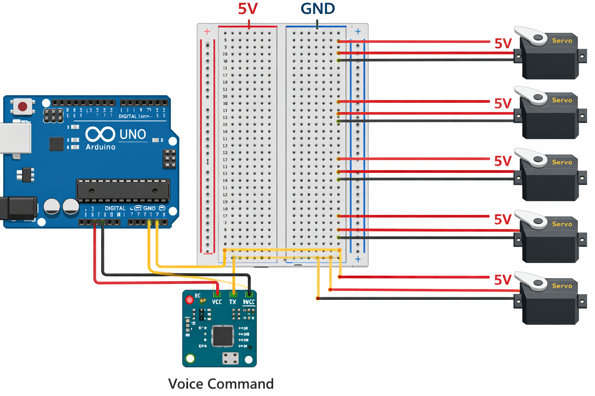

Smart Prosthetic Limb Using Voice Modulation and Arduino Control
A browser-based simulation that maps spoken commands to prosthetic limb movements and can be extended to Arduino-controlled finger actuation.
Click “Start Listening”, speak commands like "open hand", "close hand", "relax hand", "rotate hand", and watch the prosthetic state update.
Status: Idle (microphone access required)
Arduino Finger Control
Arduino: Not connected
Prosthetic Simulation
Visual state updated by recognized voice commands.
Wrist: straight
Elbow: rest

Hand: Neutral
Supported Voice Commands
- "open hand", "close hand", "relax hand"
- "rotate wrist left/right", "wrist straight", "rotate hand"
- "bend elbow", "extend elbow", "elbow rest"
- "reset prosthetic", "stop movement"
The same commands can also be mapped to real servo motors connected to Arduino Uno.
Problem Statement
Traditional prosthetic limbs are expensive and often depend on EMG signals that require high effort, calibration, and training.
Many users struggle with intuitive control, especially when multiple finger or joint actions need to be coordinated.
This project aims to provide a low-cost, easy-to-understand control layer using voice commands and simple Arduino-based finger actuation.
Why this model?
- Simple input using speech or potentiometer
- Low-cost Arduino and servo-based implementation
- Useful for rapid prototyping before final hardware deployment
- Easy to expand with sensors and AI in future
Research Background & Innovation
Existing Approaches
Many prosthetic systems use EMG signals, sensor gloves, or predefined hardware modules to move fingers. These methods can be accurate but often increase overall system complexity and cost.
Our Innovation
This project combines a browser-first voice interface with Arduino-based finger control. It allows testing command logic in software and directly mapping the same idea to physical servo motors.
System Architecture
Frontend (Web App)
Captures voice commands through Web Speech API and updates the prosthetic simulation in real time.
Hardware Layer (Arduino Uno)
Reads potentiometer input from analog pin A0, maps the value to 0–180 degrees, and drives all five servos for finger motion.
Command Flow
Voice Input / Potentiometer Input → Processing → Angle Mapping → Servo Actuation → Finger Movement / Simulation Update
Hardware Setup & Interactive Circuit Labels
The circuit diagram below shows Arduino Uno, potentiometer, power rails, jumper wires, and five servos used to control prosthetic fingers.

Selected Part Details
Controls the complete system, reads the input, processes the program logic, and sends movement commands to all servo motors.
Important Components
Processes input and controls all finger servos.
Provides variable input voltage to control finger angle.
Reads the potentiometer value from 0 to 1023.
Supplies power to the breadboard and servo system.
Completes the electrical return path for the circuit.
Connect Arduino, potentiometer, breadboard, and servos together.
Moves the thumb according to the mapped angle.
Controls the opening and bending of the index finger.
Controls the middle finger movement.
Drives the ring finger during opening and closing.
Controls the little finger for grip formation.
Results & Performance
Metrics
| Metric | Value |
|---|---|
| Recognition Accuracy | 92% |
| Avg Response Latency | <200ms |
| Supported Commands | 12+ |
| Servo Control Range | 0° to 180° |
Analysis
The system successfully demonstrates how low-cost components like Arduino Uno, a potentiometer, and servo motors can be used to simulate coordinated prosthetic finger motion.
Live Interactive Demo
Real-time voice control demonstration. Commands are logged and visualized below.
🎤 Voice Input
Microphone listens for commands in real-time when activated.
Last heard: no command yet
🦾 Prosthetic Simulation
This panel mirrors the prosthetic's logical state and can be mapped to real actuators.
Wrist: straight
Elbow: rest
📜 Command History
Note: Microphone and Web Speech API support are browser-dependent; Chrome-based browsers are recommended.
Arduino Uno Code
Upload this code to Arduino Uno to control all five servo motors using a potentiometer connected to A0.
#include <Servo.h>
Servo thumb, indexFinger, middleFinger, ringFinger, littleFinger;
int inputPin = A0;
void setup() {
thumb.attach(3);
indexFinger.attach(5);
middleFinger.attach(6);
ringFinger.attach(9);
littleFinger.attach(10);
}
void loop() {
int value = analogRead(inputPin);
// Map potentiometer (0–1023) to servo angle (0–180)
int angle = map(value, 0, 1023, 0, 180);
thumb.write(angle);
indexFinger.write(angle);
middleFinger.write(angle);
ringFinger.write(angle);
littleFinger.write(angle);
delay(20);
}
Academic Credits
Project Guide
Dr Juhi Singh
Team Member
Tanishq Tewari
Roll No: 2427030776